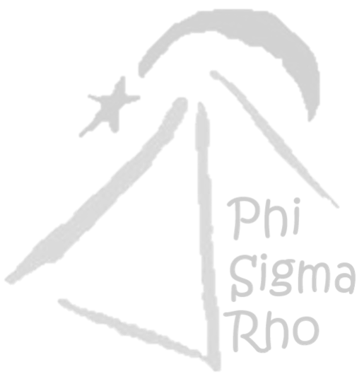

National History and Heritage
Phi Sigma Rho was founded in 1984 by Abby McDonald and Rashmi Khanna at Purdue University. Abby and Rashmi were unable to participate in traditional sorority rushes due to the demands of their engineering program, so they decided to start their own sorority instead. The Alpha chapter was founded with ten members. In the years since, Phi Sigma Rho has grown to 45 chapters nationally.
Colony History
MIT's colony of Phi Sigma Rho started as an interest group in Fall 2016. The group was voted into the IFC in Fall 2018, and the colony was established in March 2019 as the first sorority under the MIT IFC. At the same time, the Alpha Class was inducted. In Spring 2020, Phi Rho became an associate member of the IFC. The colony aims to be chartered as a full chapter in Fall 2020.

Sorority Insignia
Motto: Together We Build the Future
Flower: Orchid
Jewel: Pearl
Colors: Wine Red and Silver
Mascot: Sigmand the Penguin
Frequently Asked Questions
Why are you a member of the Interfraternity Council at MIT?
There are a number of reasons why we chose to affiliate with the IFC. The IFC provides us the opportunity to become full voting members after the probationary period. Also, the resources and infrastructure of the IFC are better suited to our needs and goals as an organization. In addition, being under the IFC enables Phi Rho to act as more of a "female fraternity", which creates a new option for women at MIT interested in Greek Life.
How can I join Phi Rho?
Since we are a member of the IFC, we participate in Rush. Come to our events during Rush week! No commitment is necessary, and we keep it stress-free. We just want to get to know you! Check out our
recruitment page for more information!
Does being in Phi Rho cost money?
Yes, most (if not all) Greek organizations fund themselves by collecting dues. Since we are very new and don't have a house, Phi Rho dues are typically much less than other Greek organizations on campus. Historically, our colony's dues have always been less than $250 per semester. If dues present a financial hardship, we encourage members to reach out to our treasurer (psr-finance@mit.edu) -- we don't ever want financial reasons to stop someone from being in Phi Rho!
Do you have a house?
At this time, we don't yet have a house, but we are working on obtaining space for Phi Rhos to live together, whether it's renting a house or part of a house. When that happens, costs would likely be on par (if not less than) living in the dorms.
Is Phi Rho LGBTQ+ friendly?
Yes! We pride ourselves on being a safe space for LGBTQ+ sisters. Many of our founding members identify as LGBTQ+, and the colony was founded with a focus on being accepting of all students.
What are the advantages of being involved in Greek Life?
Greek life has many advantages! Fraternities and sororities are great support networks academically, socially, and professionally. We support academic success with study breaks, study sessions, pset nights, peer mentoring, and more. We also have many opportunities to develop leadership skills through colony leadership positions. Phi Rho has an expansive alumni network of successful women with engineering and technical degrees, who can provide career advice and connections. We are also dedicated to service: we volunteer and are involved in service projects in the MIT and Cambridge/Boston communities. Above all, Phi Rho offers a lifetime network of people of all ages throughout the world via our alumni chapters, online groups, and reunions.
What are the advantages of being in MIT's colony of Phi Rho?
Glad you asked! Our colony is at a particularly exciting time-- since we are so young, our members will have the ability to shape the colony (and soon, chapter)! This includes writing chapter bylaws, establishing Rush events and the New Member Education program, and much more. In addition, our colony offers a unique experience for women's Greek Life. As members of the IFC, we are unique in how we recruit, what we can do, and how our organization is structured and behaves.
Do I have to be an engineering major to join Phi Rho?
No! While nationally, we are a sorority for women in engineering majors, all majors at MIT are "technical" enough to qualify for membership in Phi Rho.
